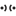
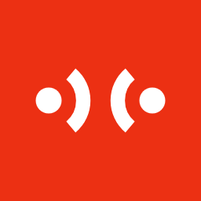

品牌物料
Local Echo 品牌与 Logo
Logo 方向
A · 对弧推荐

两个点各自发出一道弧，在中间相遇：信息在两点之间直接往返，没有中间人。
B · 直连
两个节点由一条直线相连，最直白的点对点。容易与通用的「链接」「网络」图标混淆。
C · 回声气泡
一虚一实两个对话气泡错位叠放，像一句话的回声。聊天属性强，但 16 px 下两层轮廓会粘在一起。
推荐 A。它同时表达了「两点」「直连」和「回声」，而且只由两个实心点和两段等粗弧线组成，没有任何细节依赖灰度或渐变：16 px 下仍是清楚的四个笔画，单色、反白都成立。它与 Wi-Fi、广播一类图标的区别在于两道弧是相向的，读作对话而不是单向发射。
主图形与横版组合
栅格24 × 24，图形横向撑满，纵向居中。
构成圆点 r 2.25，圆心 (3,12) / (21,12)；弧线以圆点为圆心，r 6，±50°，线宽 2.5，平头端点。
字标品牌物料用 Archivo 800；应用内标题栏用系统 UI 字体，不嵌入字体。交付前将字标转为轮廓。
间距图形与字标间距 = 图形高度的 1/3；四周留白不少于一个圆点直径。
应用图标

256（512 同构）128
64
48
32
24
16 *
直角红色方块 + 反白图形，与 Windows 11 的直角磁贴和 Linux 的方形图标都能对齐。* 16 px 使用单独绘制的小尺寸版本（弧线半径 3.5、线宽 1.5，对齐像素），其余尺寸由同一 SVG 输出。
标题栏小图标（单色）
Local Echo16 px · 浅色标题栏
Local Echo16 px · 深色标题栏
Local Echo20 px · 浅色
Local Echo20 px · 深色
标题栏图标用前景色（浅色 #201E1D / 深色 #F3F2F2），不用品牌红，避免与关闭按钮的悬停红色抢视线。另附 @2x PNG 供 2× 缩放使用；在 GPUI 中推荐直接加载 SVG 并以 foreground 着色。
托盘图标
Windows 浅色任务栏 · tray-on-light


Windows 深色任务栏 · tray-on-dark



Linux 深色顶栏 · tray-on-dark
托盘用单色图形，不用红色方块：任务栏上一排彩色图标里，单色更安静，也让红色只留给未读圆点。未读时右上角挖出 1 px 间隙，放一个品牌红圆点（16 px 下直径 5，其余尺寸按 24 栅格直径 7 缩放）。按任务栏明暗选 on-light / on-dark 两套；16 px 使用单独对齐像素的小尺寸图形。
品牌色
品牌红 #EC3013Logo、应用图标、图表 chart.1。不用于承载正文的底色。
界面强调色 #DD2B0Fprimary.background：主按钮、我方气泡、选中、进度条。白字对比度 4.8 : 1。
墨色 #201E1D浅色主题前景；单色 Logo。
纸色 #F3F2F2浅色主题背景；深色主题前景。
夜色 #1C1A1A深色主题背景。
文件清单
| 物料 | 文件 |
|---|---|
| Logo 主图形 SVG | mark.svg · mark-red.svg · mark-white.svg |
| 横版组合 SVG | lockup-light.svg · lockup-dark.svg |
| 应用图标源文件 | app-icon.svg · app-icon-16.svg |
| 应用图标 PNG | brand/png/local-echo-{16,24,32,48,64,128,256,512}.png |
| Windows .ico | local-echo.ico（16 / 24 / 32 / 48 / 64 / 256） |
| Linux 桌面图标 | brand/linux/hicolor/{48x48,128x128,256x256,512x512}/apps/local-echo.png · brand/linux/hicolor/scalable/apps/local-echo.svg |
| 托盘图标 PNG | brand/tray/tray-{on-light,on-dark}[-unread]-{16,20,24,32}.png |
| 托盘图标 SVG | brand/svg/tray-{on-light,on-dark}[-unread][-16].svg |
| 标题栏图标 | brand/svg/titlebar-{16,20}-{light,dark}.svg · brand/titlebar/*.png（含 -2x） |
| 主题色板 | local-echo-theme.json |